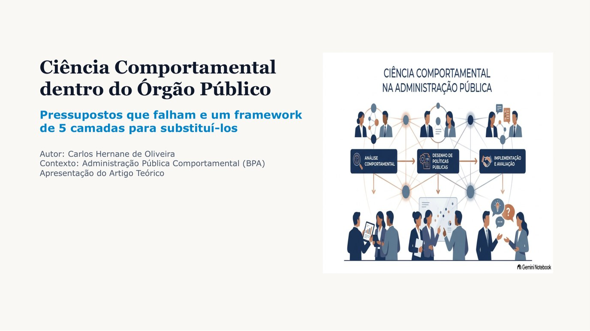
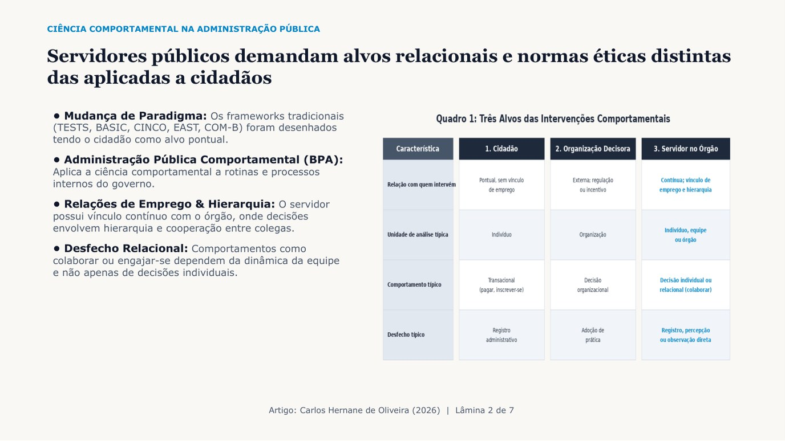
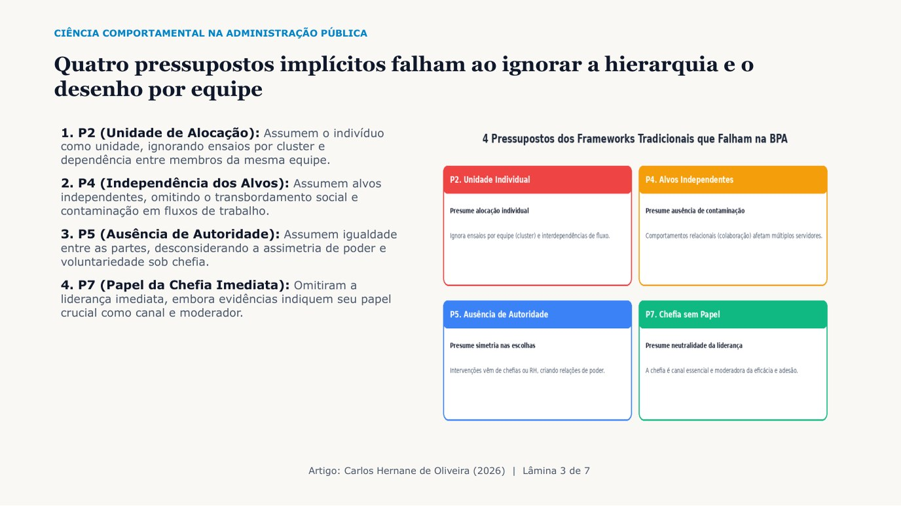
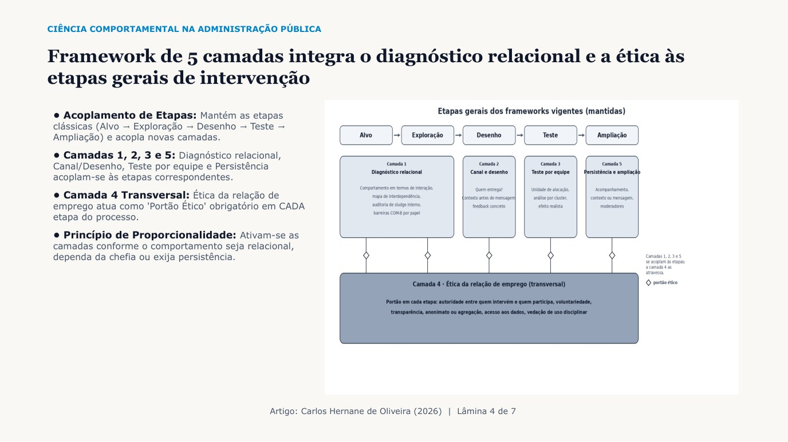
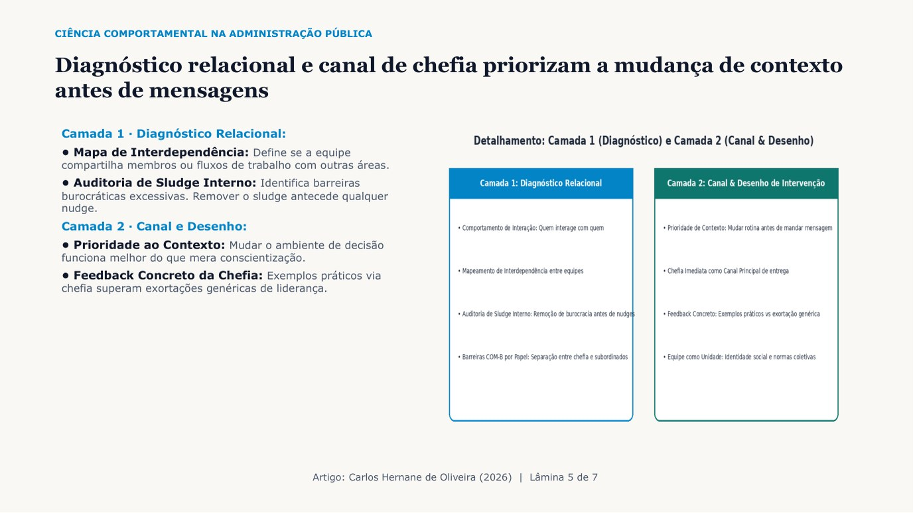
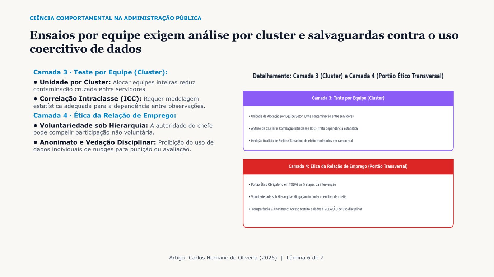
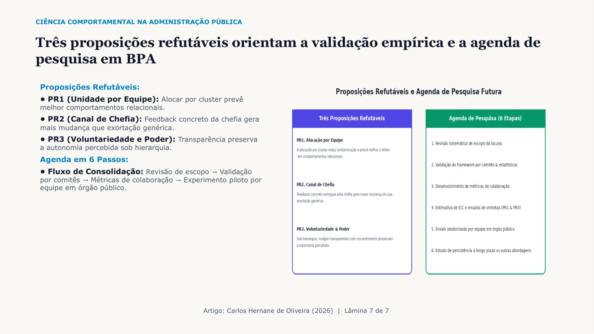

Do que trata o artigo
Os frameworks de ciência comportamental de uso corrente no setor público foram desenvolvidos, em grande parte, com o cidadão em mente. O artigo examina o que muda quando o alvo é o servidor dentro do órgão e o comportamento de interesse é relacional, como colaborar ou engajar-se.
Por meio de uma auditoria de pressupostos de seis documentos (TESTS, BASIC, CINCO, EAST, COM-B e BEAR) e de uma busca de anterioridade, identificam-se sete pressupostos implícitos, dos quais quatro aparecem pouco tratados: a unidade individual de alocação, a independência entre os alvos, a ausência de autoridade de quem intervém e a ausência de papel da chefia imediata. O texto propõe um framework de cinco camadas, acoplado às etapas gerais de intervenção, com a ética da relação de emprego como portão em cada etapa, e deriva três proposições refutáveis.
Artigo teórico: o framework não foi testado, a busca de anterioridade não foi sistemática e a aplicação fica para um segundo artigo. A afirmação de que não se encontrou um framework equivalente depende de revisão sistemática.

Pergunta e objetivo
Pergunta de pesquisa
Que pressupostos dos frameworks vigentes deixam de valer quando o alvo é o servidor dentro do órgão e o comportamento é relacional, e que elementos um framework precisa ter para tratá-los?
Objetivo
Identificar quais pressupostos deixam de valer nesse contexto, com o nível de evidência de cada um, e propor um framework de cinco camadas, acoplado às etapas gerais já conhecidas, do qual derivam três proposições refutáveis.
Introdução
Os frameworks de uso corrente nasceram do cidadão; o servidor dentro do órgão é um alvo diferente.
A ciência comportamental entrou na administração pública como uma forma de desenhar serviços para o cidadão. Mudar a forma de apresentar uma opção, de lembrar um prazo ou de simplificar um formulário pode alterar o que as pessoas fazem, e os frameworks que organizam esse trabalho nasceram dessa experiência. O TESTS, do Behavioural Insights Team, o BASIC, da OCDE (2019), o EAST e o CINCO, do Ministério da Gestão e da Inovação (2025), orientam equipes a escolher um comportamento-alvo, entender suas barreiras, desenhar uma intervenção e testá-la. Os exemplos desenvolvidos nesses documentos tratam, em sua maioria, de cidadãos, pacientes e empregadores. O exemplo do CINCO é o atendimento de segurados do INSS.
Há um segundo alvo possível, dentro do órgão: o servidor. A OCDE (2026) distingue a política pública comportamental, que tem o cidadão como alvo, da administração pública comportamental, que aplica a ciência comportamental aos processos, rotinas e regras internos do governo e tem os servidores como alvo. O relatório sobre a administração pública italiana reúne práticas para decisões, gestão de pessoas, integridade e processos, e sustenta que mudar o contexto em que se decide tende a funcionar melhor do que depender só de conscientização ou treinamento. O campo existe e está em consolidação.
A pergunta deste artigo é mais específica. Quando o alvo é o servidor e o comportamento de interesse é relacional, como colaborar com colegas ou engajar-se no trabalho, vários pressupostos que os frameworks tomam como dados deixam de valer. A auditoria que fundamenta este artigo (seção 4) identificou sete, dos quais quatro merecem destaque aqui. Os frameworks costumam assumir que a unidade de alocação e de análise é o indivíduo, e o TESTS declara que não trata de ensaios por cluster. Assumem que os alvos são independentes, o que não ocorre em equipes que compartilham membros e fluxos de trabalho. Assumem que quem intervém não tem autoridade sobre quem é influenciado, quando em órgãos públicos a intervenção pode partir da chefia, do setor de pessoal ou da direção. E dão à chefia imediata pouco ou nenhum papel, embora haja indícios de que o apoio da liderança altera a eficácia (DE PAOLIS; TIBERIO; CAFFARO, 2025).
Essas falhas são previsíveis e não aparecem como erro. Uma intervenção alocada por equipe e analisada como individual tende a superestimar a precisão. Um consentimento declarado como voluntário pode não o ser quando a pessoa é identificável e o canal é hierárquico. Celis et al. (2025), por exemplo, num experimento sobre trabalho em pé, alocaram oito departamentos de um órgão público belga, com 149 pessoas, e relataram um efeito muito grande, o que pede leitura cautelosa com tão poucas unidades. Os pilotos descritos pela OCDE (2026) randomizam indivíduos, numa pesquisa com cenário hipotético, ou órgãos inteiros, e seus desfechos são escolhas e conformidade, não colaboração. Não os citamos como falhas, e sim como exemplos de que o desenho, a análise e a ética mudam quando o alvo está dentro do órgão.
Há trabalhos próximos. Houdek (2024) aponta, em organizações, a ausência de um framework abrangente, o foco em efeitos imediatos e a dependência de crenças anedóticas dos gestores. Yusoff (2026) propõe, a partir de uma revisão integrativa de 37 publicações, um modelo que reposiciona a gestão de pessoas como arquiteta de escolhas. Haunstrup e Jensen (2024) mostram, com 226 gestores públicos dinamarqueses e 4.442 subordinados, que treinamento de liderança com nudges no momento certo aumentou a liderança transformacional percebida. No Brasil, Sengik e Maçada (2026), em revisão sistemática, apontam a falta de estudos sobre a integração organizacional dessas intervenções. Houdek e Yusoff tratam de organizações em geral, e a revisão de Yusoff excluiu, por critério, estudos centrados só em política pública.
Em busca não sistemática, não encontramos um framework que reúna o servidor como alvo, um desfecho relacional, o desenho por equipe e a ética da relação de emprego. Essa é uma afirmação sobre o que não encontramos, e só uma revisão sistemática a sustentaria com segurança. O argumento do artigo, portanto, não é que não existam frameworks para o servidor. É que os existentes falham em pontos previsíveis nesse contexto, e que esses pontos podem ser tratados de forma explícita.
O objetivo é duplo: identificar quais pressupostos deixam de valer, com o nível de evidência de cada um, e propor um framework de cinco camadas, acoplado às etapas gerais já conhecidas, do qual derivamos três proposições refutáveis. O artigo é teórico: não apresenta resultados empíricos, e a aplicação fica para um segundo artigo. A seção 2 apresenta o referencial, a 3 o método, a 4 onde os pressupostos falham, a 5 o framework e a 6 as proposições. A seção 7 discute o posicionamento e os limites, e a 8 traz a agenda.
Referencial
Três alvos da intervenção, a administração pública comportamental, os frameworks em uso e a ética.

Quadro 1 – Três alvos da intervenção comportamental
| Característica | Cidadão | Organização como decisora | Servidor dentro do órgão |
|---|---|---|---|
| Relação com quem intervém | Pontual, sem vínculo de emprego | Externa; influência por regulação ou incentivo | Contínua; emprego e hierarquia |
| Unidade típica de análise | Indivíduo | Organização | Indivíduo, equipe ou órgão |
| Comportamento típico | Transacional (pagar, inscrever-se) | Decisão organizacional | Decisão individual ou comportamento relacional (colaborar, engajar-se) |
| Desfecho típico | Registro administrativo | Adoção de uma prática | Registro, percepção ou observação do comportamento |
Fonte: elaboração própria. O quadro organiza tendências, e não regras.
A expressão “intervenção comportamental no setor público” cobre situações que diferem em quem é influenciado, em quem influencia e no tipo de comportamento. Distinguimos três alvos. O primeiro é o cidadão, como usuário, contribuinte ou paciente: o órgão intervém sobre pessoas externas, em geral numa relação pontual, e o desfecho costuma estar em registros administrativos. O segundo é a organização como tomadora de decisão. O ORGANISER, do Cabinet Office britânico (2016) é uma abordagem comportamental para influenciar organizações, e nele os funcionários são, no máximo, o canal. O terceiro é o servidor dentro do órgão: o vínculo é contínuo e hierárquico, o comportamento pode ser coletivo, e quem desenha ou entrega a intervenção pode ter autoridade sobre o participante. A distinção não é rígida, já que o servidor também é cidadão. O que muda é o conjunto de pressupostos de desenho, de análise e de ética (Quadro 1).
A OCDE (2026) define a administração pública comportamental (behavioural public administration, BPA) como a aplicação da ciência comportamental aos processos, rotinas e regras internos do governo. Um dos princípios do relatório é que mudar o contexto em que se decide funciona melhor do que informar, com apoio em estudo italiano em que informar administradores sobre vieses de ancoragem e de halo não os eliminou (CANTARELLI; BELLÈ; BELARDINELLI, 2020 apud OCDE, 2026). Os dois pilotos italianos são úteis. No primeiro, três braços foram aleatorizados dentro de uma pesquisa online para testar mensagens sobre a escolha de objetivos de qualidade no plano integrado (PIAO); a amostra analisada foi de 44.193 respostas, e o desfecho foi a escolha de objetivos fictícios num cenário hipotético, e os efeitos foram modestos. No segundo, um ensaio de dois braços comparou lembretes comportamentais com um lembrete padrão para a publicação do PIAO, com a administração como unidade, e a OCDE relata aumento de 23% nas publicações. Nos dois, o comportamento é uma decisão ou uma conformidade, e não uma interação entre colegas.
Há estudos de campo com servidores. Bellè e Cantarelli (2021) mostraram, em experimentos aleatorizados com 19.984 profissionais de saúde pública, que informar o que os colegas fazem aumentou a vacinação e a busca de ajuda no trabalho. Haunstrup e Jensen (2024) estudaram a chefia como canal. Fels (2025), com base em opiniões de especialistas, mostrou que órgãos públicos influenciam o desenho e a amostra dos experimentos e que há pouca transparência e poucos planos pré-registrados. Ali et al. (2021) organizam a gestão de pessoas no setor público em quatro níveis (indivíduo, organização, equipe e relações) e defendem a gestão relacional. Não tratam de nudges, mas fornecem a estrutura de níveis que o framework proposto adota.
Cinco documentos organizam o trabalho das equipes. O TESTS estrutura o projeto da escolha do comportamento-alvo à ampliação e dedica um capítulo ao ensaio aleatorizado, que assume alocação individual. O BASIC (OCDE, 2019) reúne ferramentas e ética, com o modelo ABCD (atenção, crenças, escolha e determinação). O CINCO é um guia dirigido a gestores de políticas. O EAST resume as intervenções em quatro princípios (fácil, atrativo, social e oportuno). O COM-B (MICHIE; VAN STRALEN; WEST, 2011) descreve o comportamento como produto de capacidade, oportunidade e motivação. Um sexto documento tem outra natureza: o BEAR (FENG et al., 2018) orienta como uma organização decide o papel, a localização e os recursos de uma equipe de insights comportamentais, e pode ser lido como camada de institucionalização.
A literatura sobre nudges dentro de organizações é menos consolidada do que a sobre consumidores e cidadãos. Beshears e Kosowsky (2020), numa revisão de 174 artigos, pedem mais pesquisa de campo, atenção ao longo prazo e estudo das interações entre nudges. Houdek (2024) argumenta que intervenções em organizações correm o risco de ser uma fachada. Yusoff (2026) propõe um modelo de três dimensões interdependentes (intencionalidade do desenho, nudge ético e redução de sludge, isto é, de obstáculos que dificultam ações benéficas), recomenda piloto antes de ampliar e pede teste empírico futuro. Seus critérios excluíram estudos centrados só em política pública, e o setor público ficou fora do modelo. Mols et al. (2015) oferecem uma crítica relevante para a equipe: o nudge funciona como modo de governança, e a mudança duradoura exigiria identidade social e internalização de normas, o que sugere que, para comportamentos coletivos, a unidade de intervenção pode ser a equipe.
A literatura de ética em nudges trata, em sua maior parte, da relação entre o governo e os cidadãos. Lades e Delaney (2022) propõem o FORGOOD, com sete dimensões (justiça, abertura, respeito, objetivos, opiniões, opções e delegação). O BASIC pede consentimento, participação voluntária e salvaguardas para populações vulneráveis. O Manifesto Ético da CINCO enuncia sete princípios, entre eles “as pessoas no comando”, com consentimento informado sempre que possível. Nenhum desses documentos, nos trechos lidos, trata a relação de emprego, em que a voluntariedade pode ser comprometida pela hierarquia. Há evidência parcial sobre transparência: van Roekel et al. (2023) relatam que nudges combinados foram percebidos como preservando a autonomia e eficazes, e Celis et al. (2025) observaram efeito maior na versão transparente. Não encontramos estudo sobre consentimento sob relação hierárquica. Yusoff (2026) registra o “sludge intencional”, em que barreiras são introduzidas para beneficiar a organização em detrimento dos empregados (UZUNCA; KAS, 2023 apud YUSOFF, 2026), o que mostra que o poder é parte do problema ético.
A administração pública comportamental tem práticas para decisões, processos e conformidade. Os frameworks de uso corrente foram pensados em grande parte para o cidadão, e os conceituais para organizações não tratam do setor público. Os estudos de campo com servidores usam, em geral, o indivíduo como unidade e desfechos de decisão, de conformidade ou de percepção. Em busca não sistemática, não encontramos um framework que reúna os quatro elementos da introdução. A seção 7 discute os limites dessa afirmação.
Método
Artigo conceitual: auditoria de pressupostos, busca de anterioridade e derivação do framework.
Este é um artigo conceitual. Combina uma auditoria de pressupostos de frameworks de intervenção comportamental, uma busca de anterioridade e a derivação de um framework e de proposições. Não há coleta de dados com pessoas. O objetivo é identificar onde os documentos assumem algo que não vale quando o alvo está dentro do órgão e organizar a resposta numa estrutura que possa ser testada depois.
Foram analisados seis documentos de uso corrente por equipes de ciência comportamental no setor público: TESTS (KETTLE; PERSIAN, 2022), BASIC (OCDE, 2019), o guia CINCO (MGI, 2025) e o seu Manifesto Ético (página do gov.br, atualizada em 27/10/2026), o EAST (BIT, edição revista), o COM-B e a roda de mudança de comportamento (MICHIE; VAN STRALEN; WEST, 2011) e o BEAR (FENG et al., 2018, lido pelo Internet Archive). Não lemos as ferramentas anexas ao guia CINCO.
O trabalho seguiu cinco etapas. (1) Formulamos sete pressupostos que um framework pode assumir sem declarar, a partir das diferenças esperadas entre o cidadão e o servidor como alvo. Foram formulados antes da leitura e revistos depois dela: a hipótese inicial de que os frameworks são pensados quase todos para o cidadão não se sustentou de forma geral, e o argumento foi reformulado. (2) Lemos cada documento no texto extraído do PDF, com busca por termos (cluster, employee, hierarchy, consent, sustain, manutenção, gestor) e leitura em contexto, e classificamos cada pressuposto como Tratado (a fonte oferece orientação ou ferramenta), Parcial (menciona o ponto como pergunta ou exemplo), Não localizado ou Não se aplica. As páginas citadas são as do arquivo PDF. (3) Descrevemos, para cada pressuposto, o modo de falha previsível (F1 a F8) e procuramos evidência em 30 trabalhos relacionados e 16 PDFs reunidos pelo autor. (4) Em 24 de novembro de 2026, buscamos na web e no OpenAlex, em inglês e português, frameworks para intervenções comportamentais sobre servidores ou funcionários, com termos como nudging employees, organizational nudges, behavioural public administration, civil servants e choice architect. Lemos resumos e, para os trabalhos mais próximos, o texto: nove dos dez capítulos do relatório da OCDE (2026), dois deles por filtro de palavras-chave, e Yusoff (2026) por inteiro. (5) Derivamos as camadas e as proposições, com critério de refutação e nível de evidência. A atribuição de falhas a camadas é interpretação nossa.
Demonstrado: estudo direto no contexto interno de organizações, ou princípio geral consolidado. Indicado: evidência indireta ou parcial, de contextos próximos. Hipotético: inferência sem estudo direto nos trabalhos reunidos. O nível descreve a evidência que encontramos, e não a verdade da afirmação.
A busca por termos pode deixar passar passagens que usam outras palavras, e “Não localizado” significa que não encontramos o ponto, e não que a fonte seja incapaz de tratá-lo. A leitura foi dirigida a esta pergunta, e a classificação foi feita por uma única pessoa, sem segunda leitura independente. A busca de anterioridade não é sistemática: foi feita em um dia, com um motor de busca e o OpenAlex, sem consulta a Scopus ou Web of Science. Alguns trabalhos foram lidos só pelo resumo, em descrições de terceiros ou em versão preprint, e parte do corpus de apoio foi catalogada com um índice gerado automaticamente. Um passo seguinte recomendado é uma revisão sistemática da lacuna (seção 8).
O estudo usa apenas literatura publicada e documentos públicos, sem coleta de dados com pessoas, e por isso não passou por comitê de ética em pesquisa.
Onde os pressupostos falham
Sete pressupostos implícitos, dos quais quatro aparecem pouco tratados nos documentos lidos.

Quadro 2 – Tratamento dos pressupostos nos documentos analisados
| Pressuposto | TESTS | BASIC | CINCO | EAST | COM-B |
|---|---|---|---|---|---|
| P1. Alvo externo ao órgão | Parcial | Parcial | Parcial | Parcial | Não se aplica |
| P2. Unidade individual | Tratado, em sentido negativo | Não localizado | Parcial | Não se aplica | Não se aplica |
| P3. Comportamento pontual | Parcial | Parcial | Parcial | Tratado | Parcial |
| P4. Alvos independentes | Parcial | Não localizado | Não localizado | Parcial | Parcial |
| P5. Sem autoridade de quem intervém | Não localizado | Parcial | Parcial | Não avaliado | Não se aplica |
| P6. Desfecho em dado administrativo | Tratado | Não se aplica | Não localizado | Não se aplica | Não se aplica |
| P7. Chefia sem papel | Não localizado | Não localizado | Não localizado | Não localizado | Parcial |
Fonte: elaboração própria.
Quadro 3 – Modos de falha, pressupostos e nível de evidência
| Modo de falha | Pressuposto | Nível de evidência |
|---|---|---|
| F1. Alocação por equipe sem guia de análise e com poucas unidades | P2 | Indicado |
| F2. Colaboração como desfecho: comportamento relacional e interdependente | P4 | Hipotético |
| F3. Relação de poder e voluntariedade | P5 | Indicado (transparência); hipotético (consentimento sob hierarquia) |
| F4. Manutenção do efeito numa relação contínua | P3 | Indicado |
| F5. Condições organizacionais moderando o efeito | P7 e geral | Indicado |
| F6. Papel da chefia imediata | P7 | Indicado |
| F7. Medida do desfecho sem registro administrativo | P6 | Hipotético |
| F8. Efeito pequeno e poder limitado em escala interna | P2 e geral | Demonstrado (princípio geral); indicado (equipes) |
Fonte: elaboração própria.
O Quadro 2 resume como cada documento trata cada pressuposto. A classificação é nossa e segue a seção 3.2. “Não avaliado” indica que não lemos a parte do EAST sobre ética em profundidade. O BEAR não entra, porque trata de institucionalização.
Quatro pressupostos (P2, P4, P5 e P7) aparecem pouco tratados ou ausentes nos documentos lidos. Dois (P1 e P3) têm tratamento parcial, e a falha, quando existe, é de grau. O P6 é tratado, mas pressupõe que o dado administrativo existe.
O P1 é o pressuposto mais fraco como lacuna. O TESTS tem como exemplos empregadores, pacientes e médicos que prescrevem antibióticos (p. 13 e 20); o BASIC traz “comportamento no local de trabalho” (p. 23); o CINCO desenvolve o caso do INSS, com servidores como entrevistados (p. 21 e 22); o EAST inclui ensaios no trabalho (p. 26). Nenhum exemplo lido tem o servidor como alvo central, e as orientações de desenho e de ética não mudam quando o alvo muda. No P3, o TESTS pergunta se o comportamento precisa ser sustentado (p. 15), o BASIC inclui a determinação para metas de longo prazo (p. 15), o CINCO considera a manutenção na ideação (p. 36 e 38) e o EAST mostra a persistência de padrões por anos num caso de energia (p. 4), mas só como perguntas e exemplos. A falha previsível (F4) é a regressão do efeito numa relação contínua: em Celis et al. (2025), parte do comportamento regrediu depois da retirada da intervenção. O nível é indicado.
É o pressuposto mais explícito. O TESTS declara que não cobre ensaios por cluster (p. 46), e o capítulo de ensaio assume alocação individual. O BASIC não traz orientação sobre cluster, o CINCO define o ensaio como distribuição aleatória dos participantes (p. 43), e o EAST só cita ensaios por cluster nas referências (p. 57 e 62). A falha previsível (F1) é alocar por equipe e analisar como individual, ou ter poucas unidades. Celis et al. (2025), um experimento de campo sobre trabalho em pé, alocaram oito departamentos e 149 pessoas a quatro condições; não verificamos como trataram o cluster. A tabela de tamanho de amostra do TESTS (p. 48), construída para alocação individual, indica que abaixo de 500 participantes é muito improvável detectar efeito, salvo intervenção muito potente. Pfledderer et al. (2024) lembram que o piloto serve à viabilidade, e não à estimativa de efeito. O nível é indicado.
O TESTS pergunta se o comportamento exige coordenação entre indivíduos ou grupos (p. 15), mas não trata a contaminação entre grupos de tratamento e controle. Não a encontramos no BASIC nem no CINCO, e o EAST trata o transbordamento social como mecanismo a favor (p. 35), e não como ameaça ao delineamento. A falha previsível (F2) aparece quando o comportamento de interesse é relacional: o de uma pessoa depende do de outras, e a intervenção numa equipe pode alcançar equipes que compartilham membros ou fluxos. Mathieu et al. (2008) e McEwan et al. (2017) mostram que treinamento e processos de equipe afetam o desempenho da equipe, mas nenhum dos trabalhos reunidos estuda um nudge cujo desfecho seja a colaboração entre servidores. O nível é hipotético, e é este o ponto mais forte para justificar um framework específico.
O TESTS baseia a ética na vulnerabilidade da população e no dano (p. 39). O BASIC pede consentimento, participação voluntária e salvaguardas para populações vulneráveis (p. 40 e 83) e equidade na amostragem (p. 137). O CINCO exige termo de consentimento e anonimato para entrevistados (p. 22 e 23). Nenhum trata a relação hierárquica. A falha previsível (F3) é tratar como voluntária uma participação que, sob hierarquia, pode não ser. A evidência é parcial para a transparência (van Roekel et al., 2023; Celis et al., 2025), e Hansen e Jespersen (2013), Schmidt (2017) e Reisch e Sunstein (2016) tratam de legitimidade perante cidadãos, e não de empregados. O nível é indicado para a transparência e hipotético para o consentimento sob hierarquia.
O TESTS prefere dados administrativos (p. 20), e não encontramos equivalente no CINCO. O pressuposto vale para comportamentos transacionais. A falha previsível (F7) aparece quando o desfecho é relacional, para o qual não há registro. Celis et al. (2025) usaram imagens de câmeras fixas, medida objetiva, mas intrusiva. O engajamento tem escalas validadas (SCHAUFELI; BAKKER; SALANOVA, 2006; PORTO-MARTINS; MACHADO, 2022), mas não encontramos medida padrão de colaboração. O nível é hipotético, e a medida traz uma questão ética própria: monitorar servidores.
É o pressuposto mais uniforme: no TESTS, no BASIC, no CINCO e no EAST não localizamos a chefia imediata como ator ou moderador, e o COM-B só a menciona de forma indireta, em modelos de papel e pares. A falha F6 é que a chefia pode ser canal ou moderador do efeito. De Paolis, Tiberio e Caffaro (2025), numa revisão sistemática de nudges para escolhas sustentáveis no trabalho, associam o apoio de liderança e de pares a maior eficácia, e Haunstrup e Jensen (2024) dão evidência direta de que a chefia é alvo e canal, embora o desfecho seja percebido. Na F5, as condições organizacionais moderam o efeito: Sengik e Maçada (2026) apontam a falta de estudos sobre integração organizacional, e Khadzhyradieva, Hrechko e Smalskys (2019) mostram que competência, motivação e resistência dos servidores determinam a institucionalização. O nível é indicado.
Um último modo de falha (F8) decorre de P2 e do contexto geral: DellaVigna e Linos (2022) estimam 1,4 ponto percentual nas unidades de governo, contra 8,7 nos artigos acadêmicos, e Maier et al. (2022) não encontram evidência robusta após corrigir o viés de publicação. É um princípio geral demonstrado, e para equipes internas a evidência é indicada. A auditoria não sustenta que os frameworks falham de modo geral. Padrões funcionam em órgãos e em mudança organizacional (CELIS et al., 2025; MÜLLER; BÖHM; RENZ, 2023), mensagens pró-sociais funcionam com profissionais de saúde (BELLÈ; CANTARELLI, 2024), o COM-B é utilizável no contexto interno, e as etapas gerais continuam adequadas. O argumento é que os frameworks falham em pontos previsíveis, e não que sejam inadequados. O Quadro 3 reúne os modos de falha.
O framework
Cinco camadas acopladas às etapas já conhecidas, com a ética como portão em cada uma.



Quadro 4 – Portão ético por etapa
| Etapa | Pergunta de verificação | Eliminatória? |
|---|---|---|
| Alvo e exploração | Há autoridade entre quem intervém e quem participa? A pessoa pode recusar sem custo? | Sim, se a recusa tiver custo |
| Desenho | A intervenção é transparente? O efeito esperado beneficia o servidor, e não só o órgão? Há sludge intencional? | Sim, se houver sludge intencional |
| Teste | Os dados são anônimos ou agregados por equipe, com número mínimo de pessoas por grupo? Quem os acessa? O uso disciplinar está vedado? Há revisão por comitê de ética? | Sim, para o uso disciplinar e para a falta de revisão |
| Ampliação | A ampliação mantém as salvaguardas, e os servidores foram informados dos resultados? | Não, mas deve ser registrada |
Fonte: elaboração própria, a partir do Manifesto Ético da CINCO, do BASIC (OCDE, 2019) e do FORGOOD (Lades e Delaney, 2022), adaptados à relação de emprego. A adaptação é interpretação nossa e precisa de validação.
Quadro 5 – Aplicação ilustrativa das cinco camadas em um caso hipotético
| Camada | Decisão no caso | Produto |
|---|---|---|
| 1. Diagnóstico relacional | Define o comportamento como a interação “o atendente encaminha o caso completo e a área responde em até cinco dias úteis”. Mapeia que 20 equipes de atendimento compartilham três áreas finalísticas. Audita o sludge: o formulário de encaminhamento tem 14 campos e exige reenvio quando falta um anexo. | Comportamento descrito de forma observável; mapa de fluxos entre equipes; lista de sludge a remover. |
| 2. Canal e desenho | Antes de qualquer mensagem, reduz o formulário a seis campos (mudança de contexto). Como canal complementar, a chefia imediata recebe todo mês feedback concreto, com exemplos de encaminhamentos completos e incompletos da própria equipe, em vez de uma exortação à colaboração. | Formulário revisado; roteiro de feedback para a chefia. |
| 3. Teste por equipe | Como as equipes compartilham áreas finalísticas, agrupa as equipes pela área que mais acionam e aloca por grupo, e não por atendente. Se restarem 20 unidades independentes de 10 pessoas, com correlação intraclasse de 0,05, o tamanho efetivo é de cerca de 138 pessoas (valor ilustrativo); o piloto serve para estimar essa correlação. O desfecho é a proporção de encaminhamentos completos, extraída do sistema e agregada por equipe. | Plano de alocação e de análise; piloto de viabilidade. |
| 4. Ética da relação de emprego | Em cada etapa, aplica o Quadro 4: a participação é opcional e a recusa não gera custo; o feedback usa dados agregados por equipe e o uso disciplinar é vedado por escrito; há revisão por comitê de ética e os servidores são informados antes. Uma resposta negativa a uma pergunta eliminatória interrompe o projeto até ser tratada. | Termo de salvaguardas; parecer do comitê; comunicação aos servidores. |
| 5. Persistência e ampliação | Mede o encaminhamento completo por três meses depois de encerrar o feedback. Só amplia a outras áreas após reavaliar os moderadores (apoio das chefias e carga de trabalho) e espera efeito menor em escala. | Medidas de acompanhamento; critério de ampliação. |
Fonte: elaboração própria. Caso hipotético, sem dados empíricos.
O framework mantém as etapas gerais dos frameworks vigentes (alvo, exploração, desenho, teste e ampliação), que a auditoria mostrou continuarem adequadas, e acrescenta cinco camadas que tratam, de forma explícita, os pressupostos que deixam de valer. Quatro princípios o orientam: acoplamento a etapas já conhecidas; explicitação dos pressupostos, cada um associado a uma decisão e a um produto; portão ético, isto é, a ética da relação de emprego como condição verificada em todas as etapas, e não como etapa à parte; e proporcionalidade, porque as camadas se ativam conforme o caso. A Figura 1 mostra as camadas e a etapa a que cada uma se acopla.
Três perguntas de entrada indicam as camadas obrigatórias. Se o comportamento depende de outras pessoas, ativam-se as camadas 1 e 3. Se quem entrega tem autoridade sobre o participante, ou o participante é identificável, ativam-se a camada 4, como portão obrigatório, e a 2, para escolher o canal. Se o efeito precisa durar numa relação contínua ou ser ampliado, ativa-se a camada 5. Se as três respostas forem não, os frameworks vigentes bastam, com a verificação ética mínima que já preveem.
Define o comportamento de interesse como interação observável (quem faz o quê com quem), mapeia se a equipe compartilha membros ou fluxos com outras, audita o sludge interno e analisa as barreiras COM-B por papel, separando servidor e chefia. A auditoria de sludge segue Sunstein (2022 apud YUSOFF, 2026). Como ilustração, a OCDE (2026, cap. 10) descreve o caso do Secretariado do Conselho do Tesouro do Canadá, em que a transferência de servidores entre órgãos exigia de 67 a 78 etapas, mais de quatro horas de trabalho ativo e 88 horas de espera. Se o diagnóstico revelar sludge que explica o comportamento, removê-lo precede qualquer mensagem. Trata F2, F5 e F7.
Escolhe quem entrega a intervenção (sistema ou processo, chefia imediata, setor de pessoal ou colegas) e o que entregar. A regra de prioridade é mudar o contexto de decisão antes de recorrer a mensagem ou treinamento (OCDE, 2026). Se o canal for a chefia, o conteúdo deve ser feedback concreto com exemplos, e não exortação: no piloto da OCDE (2026, cap. 3), o feedback com exemplos superou a mensagem de liderança, embora com desfecho hipotético e individual. Bellè e Cantarelli (2021), que mostram o efeito de informar o que os colegas fazem, e Mols et al. (2015), que apontam o papel da identidade social, dão base para considerar a equipe, e não só o indivíduo, como unidade de intervenção. Se o canal tem autoridade sobre o participante, aciona-se a camada 4. Trata F5 e F6.
Planeja um teste cuja unidade de alocação e de análise corresponda ao nível em que o comportamento ocorre. Como o TESTS declara não cobrir ensaios por cluster (p. 46), a orientação desta camada é construída aqui, e não extraída dos frameworks, e deve ser revista por quem tenha formação em estatística. Os princípios são: alocar por equipe quando o comportamento é coletivo, subindo ao nível em que as equipes sejam independentes se compartilharem membros ou fluxos; analisar considerando o agrupamento, com efeito de desenho 1 + (m − 1) × ICC, em que m é o tamanho médio da equipe e ICC a correlação intraclasse, e tamanho efetivo igual ao número de pessoas dividido pelo efeito de desenho (a título de ilustração, 20 equipes de 10 pessoas com ICC de 0,05 dão tamanho efetivo de cerca de 138, e com ICC de 0,20, de cerca de 71; os valores são ilustrativos, não estimativas para desfechos relacionais de servidores, que são desconhecidas na literatura reunida); tratar o piloto como instrumento de viabilidade e de estimativa da correlação (PFLEDDERER et al., 2024); calibrar o efeito esperado com cautela (DELLAVIGNA; LINOS, 2022); e medir o comportamento preservando o anonimato. Trata F1, F7 e F8.
Verifica, em cada etapa, se a participação é voluntária e se a intervenção respeita a relação de trabalho. Os documentos lidos tratam a ética pela vulnerabilidade da população e pelo dano (seção 4.5), e sob hierarquia a voluntariedade declarada pode não ser real e a intervenção pode ser usada contra o servidor. Em cada etapa, a equipe responde às perguntas do Quadro 4, e uma resposta negativa a uma pergunta eliminatória impede avançar até que seja tratada. Trata F3 e F7.
Verifica se o efeito dura numa relação contínua e o que muda ao ampliar. Inclui medidas de acompanhamento depois do fim da intervenção, distingue intervenção sobre o contexto (regra, processo) de intervenção sobre a mensagem, cuja comparação direta não tem estudo nos trabalhos reunidos e fica para o segundo artigo, reavalia os moderadores antes de ampliar (SENGIK; MAÇADA, 2026; KHADZHYRADIEVA; HRECHKO; SMALSKYS, 2019), espera efeito menor em escala (DELLAVIGNA; LINOS, 2022) e faz piloto antes de ampliar (YUSOFF, 2026; OCDE, 2026). Trata F4, F5 e F8.
Para mostrar o uso das camadas passo a passo, descrevemos um caso hipotético. Não é um relato empírico: os números são ilustrativos e servem só para mostrar as decisões que cada camada pede. Um órgão estadual quer aumentar a colaboração entre as equipes de atendimento ao público e as áreas finalísticas na resolução de demandas que dependem das duas. O comportamento de interesse é relacional: o atendente encaminha o caso completo e a área finalística responde no prazo combinado. A intervenção seria entregue pela chefia imediata.
As três perguntas de entrada (seção 5.1) têm resposta afirmativa: o comportamento depende de outras pessoas, quem entrega tem autoridade sobre os participantes e o efeito precisa durar. Por isso as cinco camadas são ativadas, como mostra o Quadro 5.
O exemplo mostra o que o framework acrescenta aos frameworks vigentes: a alocação por grupo de equipes que compartilham fluxos, o feedback concreto entregue pela chefia e o portão ético, que impede a ampliação enquanto a participação não for de fato voluntária. As demais etapas (alvo, exploração, desenho, teste e ampliação) seguem como nos guias de uso corrente.
O framework não foi testado: é uma proposta teórica derivada de uma auditoria de documentos. A atribuição de falhas a camadas é interpretação nossa. A camada 3 é construída aqui e a camada 4 adapta princípios formulados para cidadãos, e ambas precisam de validação, por estatístico e por comitês de ética, representantes de servidores e especialistas em direito administrativo e do trabalho. O framework acrescenta trabalho, e por isso a regra de proporcionalidade, e há o risco de a camada ética virar formalidade, o que só se evita se uma resposta negativa realmente impedir o avanço. O BEAR pode ser lido como camada acima: orienta o papel de uma equipe de insights, enquanto o framework orienta o desenho e o teste de cada intervenção.
Proposições
Três proposições refutáveis, com o desenho de teste de cada uma.
Quadro 6 – Resumo das proposições
| Proposição | Camada | Lacuna | Evidência hoje | Teste possível |
|---|---|---|---|---|
| PR1. Unidade de alocação | 3 (e 1) | P2, P4 | Princípio demonstrado; correlação desconhecida; contaminação hipotética | Estimativa da correlação em dados existentes; ensaio com equipes independentes e interdependentes |
| PR2. Canal de chefia | 2 | P7 | Indicada | Ensaio por equipe com dois fatores (canal e conteúdo) |
| PR3. Voluntariedade e poder | 4 | P5 | Indicada (transparência); hipotética (consentimento sob hierarquia) | Experimento de vinhetas; depois, ensaio de campo |
Fonte: elaboração própria.
Mantivemos as afirmações que sustentam as lacunas mais bem apoiadas pelas fontes primárias (P2, P4, P5 e P7), podem ser refutadas por um desenho descrito e têm evidência atual insuficiente para decidir. Resultaram três proposições. Ficaram fora, como proposições, a persistência (a intervenção sobre o contexto dura mais do que a mensagem), que vai para a agenda do artigo 2 por não haver estudo direto, e os efeitos pequenos em equipes internas, que viram premissa de desenho da camada 3, por serem um princípio geral demonstrado (DELLAVIGNA; LINOS, 2022). A interdependência entre equipes foi incorporada à PR1.
Enunciado. Em desfechos relacionais de servidores, a correlação intraclasse dentro das equipes não é desprezível, e equipes que compartilham membros ou fluxos contaminam o controle. Por isso a precisão e a validade do ensaio dependem do número de equipes independentes, e não do de pessoas, e, havendo interdependência, a alocação deve subir ao nível em que as equipes são independentes.
Fundamentação e evidência. O efeito de desenho é um resultado estatístico consolidado, mas o valor da correlação para desfechos relacionais em órgãos públicos é desconhecido na literatura reunida, e a contaminação entre equipes é hipotética: nenhum framework lido a trata como ameaça ao delineamento. Refutação: correlação próxima de zero, em amostra com número suficiente de equipes, ou ausência de diferença de efeito entre equipes independentes e interdependentes. Teste: a primeira parte pode ser respondida sem intervenção, estimando a correlação em dados existentes de pesquisas de clima ou num piloto sem tratamento; a segunda exige um ensaio com número suficiente de equipes, classificadas previamente por um mapa de fluxos de trabalho. Se refutada, a camada 3 se simplificaria nesses desfechos.
Enunciado. A intervenção que entrega feedback concreto com exemplos por meio da chefia imediata produz mais mudança no comportamento colaborativo da equipe do que a mesma intervenção entregue sem a chefia. O ganho depende do conteúdo: uma exortação genérica, mesmo vinda da chefia, produz menos mudança do que o feedback concreto.
Fundamentação e evidência. Indicada. Haunstrup e Jensen (2024) observaram, com chefias e subordinados, aumento da liderança transformacional percebida; De Paolis, Tiberio e Caffaro (2025) associam o apoio de liderança a maior eficácia; no piloto da OCDE (2026, cap. 3), o feedback com exemplos superou a mensagem de liderança, mas com desfecho hipotético, randomização individual e mensagem vinda da autoridade política, e não da chefia imediata. Refutação: efeito igual ou menor com a chefia, ou igual entre feedback e exortação. Teste: ensaio com alocação por equipe e dois fatores, canal (chefia ou sistema) e conteúdo (feedback ou exortação), mais controle, com desfecho colaborativo observável e anônimo. Se refutada, a regra de canal da camada 2 deixaria de privilegiar a chefia.
Enunciado. A percepção de voluntariedade é menor quando o canal tem autoridade sobre o participante e quando a pessoa é identificável. Transparência, saída sem custo e agregação por equipe preservam a percepção de autonomia sem eliminar o efeito.
Fundamentação e evidência. Indicada para a transparência (van Roekel et al., 2023; Celis et al., 2025) e hipotética para o consentimento sob hierarquia, para o qual não encontramos estudo. Refutação: percepção igual entre canais com e sem autoridade, ou perda de efeito com as salvaguardas. Teste: primeiro um experimento de vinhetas, em que servidores leem a descrição de uma intervenção variando canal, identificabilidade e salvaguardas e avaliam o quanto sentiriam que podem recusar; depois, o ensaio de campo da PR2, com as salvaguardas como fator. Se refutada, o portão ético poderia ser menos restritivo quanto ao canal, mas as salvaguardas de anonimato e de vedação de uso disciplinar seriam mantidas, porque protegem contra o uso indevido dos dados.
As proposições não são independentes: se a correlação for alta, o ensaio da PR2 precisará de mais equipes, e o resultado da PR3 definirá as salvaguardas do ensaio. Sugerimos começar pelas partes baratas, a estimativa da correlação (PR1) e o experimento de vinhetas (PR3), e só então montar o ensaio de campo. As proposições não afirmam que o framework funciona, não estimam tamanhos de efeito e não se aplicam a comportamentos individuais e transacionais, para os quais os frameworks vigentes bastam.
Discussão e limites
Posicionamento em relação às obras próximas, objeções previsíveis e limites.
A auditoria mostrou que os frameworks não excluem o servidor e que suas etapas gerais continuam adequadas, e que quatro pressupostos (P2, P4, P5 e P7) aparecem pouco tratados ou ausentes, enquanto P1 e P3 têm tratamento parcial. A resposta proposta é um framework de cinco camadas, com a ética da relação de emprego como portão, e três proposições refutáveis.
A relação mais importante é com a OCDE (2026). O relatório oferece um blueprint de práticas, e seu princípio central, de que mudar o contexto de decisão tende a funcionar melhor do que informar, é compatível com a regra de prioridade da camada 2. Nos capítulos lidos, trata de decisões, processos e conformidade, e não encontramos nele um framework de teste para comportamentos relacionais nem a camada de equipe. A diferença está no foco, e não é uma crítica ao relatório. Em relação a Yusoff (2026), o modelo exclui o setor público e não propõe desenho de teste, mas traz a ideia, que o framework incorpora, de que a gestão de pessoas já é uma arquitetura de escolhas e de que o sludge interno merece auditoria. Houdek (2024) converge com o argumento ao apontar, em organizações, a ausência de um framework abrangente e o foco em efeitos imediatos (F4).
a) A distinção entre três alvos (Quadro 1), apoiada na leitura direta das fontes.
b) A auditoria de pressupostos como método para examinar frameworks, com nível de evidência explícito, que pode ser reaplicada a outros contextos.
c) O framework de cinco camadas e a adaptação da ética à relação de emprego, esta a mais frágil, por se basear em princípios formulados para cidadãos.
Para equipes de ciência comportamental, a implicação é verificar, antes de usar um framework num projeto interno, se o comportamento depende de outras pessoas, se quem entrega tem autoridade sobre o participante e se o efeito precisa durar ou ser ampliado. Para gestores e setores de pessoal, é de cautela: a voluntariedade declarada pode não ser real, e intervenções sobre colaboração e engajamento precisam de anonimato, vedação de uso disciplinar e revisão ética quando houver coleta de dados.
a) “Guias de projeto não precisam tratar de cluster.” Um guia geral não deve cobrir tudo, mas a omissão é invisível: uma equipe pode alocar por equipe e analisar como individual sem perceber. O TESTS tem o mérito de declarar a limitação.
b) “A administração pública comportamental já cobre isso.” Nos nove capítulos lidos da OCDE (2026) não encontramos o framework de teste para comportamentos relacionais, mas não lemos o capítulo 5 nem o Anexo A, e a busca não é sistemática.
c) “Para colaboração, nudge talvez não seja a melhor abordagem.” É possível: Mols et al. (2015) e Ali et al. (2021) apontam outros caminhos. O framework afirma apenas que, quando se opta por uma intervenção comportamental, o desenho, o teste e a ética precisam considerar a equipe e a relação de poder.
d) “As lacunas refletem o recorte da leitura.” É um risco: a classificação foi feita por uma pessoa, com busca por termos, e uma segunda leitura independente de uma amostra o reduziria.
Os limites do método estão na seção 3.4 e os do framework na 5.8. Os que mais afetam a interpretação: o artigo é teórico e nada foi testado; a busca de anterioridade não foi sistemática, de modo que “não encontramos” não equivale a “não existe”; a classificação foi feita por um único avaliador; parte da evidência foi lida só pelo resumo ou de forma indireta, e tem nível indicado ou hipotético; e os documentos são de origem britânica, internacional e brasileira, e o resultado pode não se transferir a outros contextos.
Agenda de pesquisa e considerações finais
Seis frentes de pesquisa, em ordem de dependência, e as considerações finais.
As frentes seguintes estão em ordem de dependência.
a) Revisão sistemática da lacuna: uma revisão de escopo com protocolo registrado antes da busca, bases indexadas (por exemplo, Scopus e Web of Science), bases em português e espanhol, literatura cinzenta e seleção em dupla, com termos cobrindo intervenção comportamental, servidor, comportamento relacional e desenho de teste ou ética. Pode começar já.
b) Validação do framework por estatístico, comitê de ética, representantes de servidores e especialistas em direito administrativo e do trabalho, com roteiro e critérios de concordância definidos antes.
c) Medida de colaboração: um instrumento ou conjunto de indicadores válido, anônimo e não intrusivo.
d) Estimativa da correlação intraclasse e experimento de vinhetas (PR1, parte 1, e PR3, parte 1).
e) Segundo artigo: ensaio aleatorizado por equipe (PR2, PR3, parte 2, e PR1, parte 2), que depende de um órgão parceiro e de aprovação ética, com plano de análise declarado de antemão.
f) Comparação e persistência: intervenção sobre o contexto versus sobre a mensagem, e o nudge versus outras abordagens, como o desenvolvimento de equipes.
O uso de inteligência artificial por servidores, que a OCDE (2026, cap. 10) trata como risco comportamental (viés de automação), é um comportamento que o framework poderia ajudar a estudar.
Os frameworks de ciência comportamental de uso corrente foram desenvolvidos, em grande parte, com o cidadão em mente, e suas etapas gerais continuam úteis para o servidor dentro do órgão. Quando o comportamento de interesse é relacional, porém, alguns pressupostos deixam de valer: a unidade individual, a independência entre os alvos, a ausência de autoridade de quem intervém e o papel nulo da chefia. Este artigo apresentou esses pressupostos com o nível de evidência de cada um, propôs um framework de cinco camadas que os trata de forma explícita e derivou três proposições refutáveis.
O argumento é mais estreito do que o de que não existem frameworks para o servidor. A administração pública comportamental é um campo reconhecido, e há trabalhos próximos. O que não encontramos, em busca não sistemática, foi um framework que reúna o servidor como alvo, um desfecho relacional, o desenho por equipe e a ética da relação de emprego. Essa é uma afirmação sobre o que não encontramos, e a agenda começa por confirmá-la ou refutá-la com uma revisão sistemática.
ALI, A. J. et al. Four lenses on people management in the public sector: an evidence review and synthesis. Oxford Review of Economic Policy, v. 37, n. 2, p. 335-366, 2021. DOI: 10.1093/oxrep/grab003.
BEHAVIOURAL INSIGHTS TEAM (BIT). EAST: four simple ways to apply behavioural insights. Ed. rev. Londres: BIT, [s.d.]. Disponível em: https://www.bi.team/publications/east-four-simple-ways-to-apply-behavioural-insights/. Acesso em: 27 nov. 2026.
BELLÈ, N.; CANTARELLI, P. Nudging public employees through descriptive social norms in healthcare organizations. Public Administration Review, v. 81, n. 4, p. 589-598, 2021. DOI: 10.1111/puar.13353.
BELLÈ, N.; CANTARELLI, P. Cui prodest? Nudging prosocial behavior among healthcare professionals. International Public Management Journal, v. 27, n. 5, p. 709-725, 2024. DOI: 10.1080/10967494.2023.2294766.
BESHEARS, J.; KOSOWSKY, H. Nudging: progress to date and future directions. Organizational Behavior and Human Decision Processes, v. 161, p. 3-19, 2020. DOI: 10.1016/j.obhdp.2020.09.001.
BRASIL. Ministério da Gestão e da Inovação em Serviços Públicos. Guia metodológico CINCO. Brasília: MGI, 2025. 82 p. Inclui o Manifesto Ético da CINCO (página do gov.br, atualizada em 27 out. 2026). Disponível em: https://repositorio.enap.gov.br/handle/1/9966. Acesso em: 27 nov. 2026.
CABINET OFFICE. ORGANISER: a behavioural approach for influencing organisations. Londres: Cabinet Office, 2016. Disponível em: https://www.gov.uk/government/publications/organiser-a-behavioural-approach-for-influencing-organisations. Acesso em: 27 nov. 2026.
CELIS, M. et al. Defaults at work: a field experiment on the effect of nudges on stand-up working. International Journal of Environmental Research and Public Health, v. 22, n. 7, p. 994, 2025. DOI: 10.3390/ijerph22070994.
DE PAOLIS, G.; TIBERIO, L.; CAFFARO, F. More sustainable choices in the workplace: a systematic review of nudge theory applications. Frontiers in Psychology, v. 16, p. 1556796, 2025. DOI: 10.3389/fpsyg.2025.1556796.
DELLAVIGNA, S.; LINOS, E. RCTs to scale: comprehensive evidence from two nudge units. Econometrica, v. 90, n. 1, p. 81-116, 2022. DOI: 10.3982/ecta18709.
FELS, K. M. Who nudges whom? Expert opinions on behavioural field experiments with public partners. Behavioural Public Policy, v. 9, n. 1, p. 212-248, 2025. DOI: 10.1017/bpp.2022.14.
FENG, B. et al. How should organizations best embed and harness behavioural insights? A playbook. Toronto: BEAR, Rotman School of Management, 2018.
HANSEN, P. G.; JESPERSEN, A. M. Nudge and the manipulation of choice: a framework for the responsible use of the nudge approach to behaviour change in public policy. European Journal of Risk Regulation, v. 4, n. 1, p. 3-28, 2013. DOI: 10.1017/s1867299x00002762.
HAUNSTRUP, J. S.; JENSEN, U. T. Leadership training and just-in-time nudges: a field experiment on the transfer of learning into action. International Public Management Journal, v. 27, n. 5, p. 684-708, 2024. DOI: 10.1080/10967494.2024.2314055.
HOUDEK, P. Nudging in organizations: how to avoid behavioral interventions being just a façade. Journal of Business Research, v. 182, art. 114781, 2024. DOI: 10.1016/j.jbusres.2024.114781.
KETTLE, S.; PERSIAN, R. Target, Explore, Solution, Trial, Scale: an introduction to running simple behavioural insights projects. Londres: Behavioural Insights Team, 2022.
KHADZHYRADIEVA, S.; HRECHKO, T.; SMALSKYS, V. Institutionalisation of behavioural insights in public policy. Public Policy and Administration, v. 18, n. 3, p. 95-113, 2019. DOI: 10.5755/j01.ppaa.18.3.24726.
LADES, L. K.; DELANEY, L. Nudge FORGOOD. Behavioural Public Policy, v. 6, n. 1, p. 75-94, 2022. DOI: 10.1017/bpp.2019.53.
MAIER, M. et al. No evidence for nudging after adjusting for publication bias. Proceedings of the National Academy of Sciences, v. 119, n. 31, e2200300119, 2022. DOI: 10.1073/pnas.2200300119.
MATHIEU, J. et al. Team effectiveness 1997-2007: a review of recent advancements and a glimpse into the future. Journal of Management, v. 34, n. 3, p. 410-476, 2008. DOI: 10.1177/0149206308316061.
MCEWAN, D. et al. The effectiveness of teamwork training on teamwork behaviors and team performance: a systematic review and meta-analysis of controlled interventions. PLoS ONE, v. 12, n. 1, e0169604, 2017. DOI: 10.1371/journal.pone.0169604.
MICHIE, S.; VAN STRALEN, M. M.; WEST, R. The behaviour change wheel: a new method for characterising and designing behaviour change interventions. Implementation Science, v. 6, art. 42, 2011. DOI: 10.1186/1748-5908-6-42.
MOLS, F. et al. Why a nudge is not enough: a social identity critique of governance by stealth. European Journal of Political Research, v. 54, n. 1, p. 81-98, 2015. DOI: 10.1111/1475-6765.12073.
MÜLLER, M. M.; BÖHM, K. L.; RENZ, E. Pay or nudge employees into change? A theoretical and experimental investigation of the effect of nudging for organizational change. Managerial and Decision Economics, v. 44, n. 6, p. 3666-3695, 2023. DOI: 10.1002/mde.3901.
ORGANIZAÇÃO PARA A COOPERAÇÃO E DESENVOLVIMENTO ECONÔMICO (OCDE). Tools and ethics for applied behavioural insights: the BASIC toolkit. Paris: OECD Publishing, 2019. DOI: 10.1787/9ea76a8f-en.
______. Fixing frictions: “sludge audits” around the world: how governments are using behavioural science to reduce psychological burdens in public services. Paris: OECD Publishing, 2024. (OECD Public Governance Policy Papers, n. 48). DOI: 10.1787/5e9bb35c-en.
______. Applying behavioural science in the Italian public administration: a blueprint for best practices. Paris: OECD Publishing, 2026. DOI: 10.1787/a7d9d7d9-en.
PFLEDDERER, C. D. et al. Consolidated guidance for behavioral intervention pilot and feasibility studies. Pilot and Feasibility Studies, v. 10, n. 1, art. 57, 2024. DOI: 10.1186/s40814-024-01485-5.
PORTO-MARTINS, P. C.; MACHADO, P. G. B. Processo de validação de escala de engajamento no trabalho para população brasileira. Psicologia Teoria e Pesquisa, v. 38, e38511, 2022. DOI: 10.1590/0102.3772e38511.pt.
REISCH, L. A.; SUNSTEIN, C. R. Do Europeans like nudges? Judgment and Decision Making, v. 11, n. 4, p. 310-325, 2016. DOI: 10.1017/s1930297500003740.
SCHAUFELI, W. B.; BAKKER, A. B.; SALANOVA, M. The measurement of work engagement with a short questionnaire: a cross-national study. Educational and Psychological Measurement, v. 66, n. 4, p. 701-716, 2006. DOI: 10.1177/0013164405282471.
SCHMIDT, A. T. The power to nudge. American Political Science Review, v. 111, n. 2, p. 404-417, 2017. DOI: 10.1017/s0003055417000028.
SENGIK, A. R.; MAÇADA, A. C. G. Nudges and cognitive processes in public administration: a systematic review and research agenda. Revista de Administração Pública, v. 60, e2025-0227, 2026. DOI: 10.1590/0034-761220250227x.
VAN ROEKEL, H. et al. Nudges can be both autonomy-preserving and effective: evidence from a survey and quasi-field experiment. Behavioural Public Policy, v. 10, n. 1, p. 127-150, 2023. DOI: 10.1017/bpp.2023.18.
YUSOFF, A. From sludge to nudge: rethinking HRM as a choice architect in the face of social change. Personnel Review, 2026. DOI: 10.1108/PR-09-2025-1080.
A síntese
Os frameworks de ciência comportamental de uso corrente foram desenvolvidos, em grande parte, com o cidadão em mente, e suas etapas gerais continuam úteis para o servidor dentro do órgão. Quando o comportamento de interesse é relacional, porém, alguns pressupostos deixam de valer: a unidade individual, a independência entre os alvos, a ausência de autoridade de quem intervém e o papel nulo da chefia. O artigo apresenta esses pressupostos com o nível de evidência de cada um, propõe um framework de cinco camadas que os trata de forma explícita e deriva três proposições refutáveis.

Em busca não sistemática, não encontramos um framework que reúna o servidor como alvo, um desfecho relacional, o desenho por equipe e a ética da relação de emprego. Essa é uma afirmação sobre o que não encontramos, e a agenda começa por confirmá-la ou refutá-la com uma revisão sistemática.